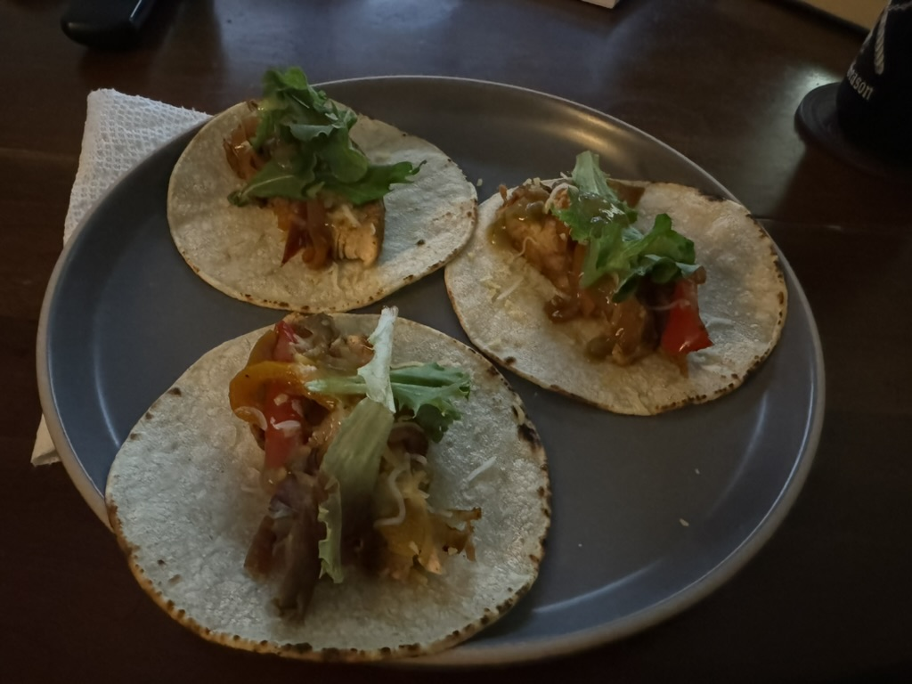

Chicken Fajitas

Description
These chicken fajitas are delicious and super quick/easy to make.
They are perfect for a weeknight meal, and you can make enough for a
few days of leftovers.
Ingredients
- 1.5lbs of chicken breast
- 3 bell peppers of different colors
- 1 medium yellow onion
- olive oil
- salt
- pepper
- cumin
- chili powder
- paprika
- garlic powder
- thyme
- White corn tortillas
- Mexican cheese
- Lettuce
- Salsa
- Lime wedges
Steps
- Slice chicken breasts in half if too thick
- Mix a couple tablespoons of oil and spices (measured to your liking) with the chicken breasts until they are all evenly coated
- Heat up a pan on medium and add some oil before adding in the chicken
- Cook on each side for 6 minutes or until cooked through
- While the chicken is cooking, chop all your vegetables - bell peppers into strips and onions into slices
- After the chicken is done cooking, rest it on a plate and throw the onions and peppers into the pan
- After a few minutes of the vegetables cooking, slice the chicken breasts into strips
- Once vegetables are cooked, add chicken back into the pan and mix together
- Eat with warm tortillas, cheese, lettuce, salsa, and squeeze some lime